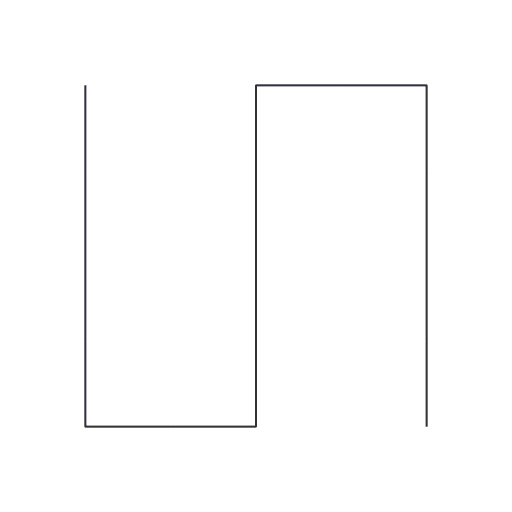
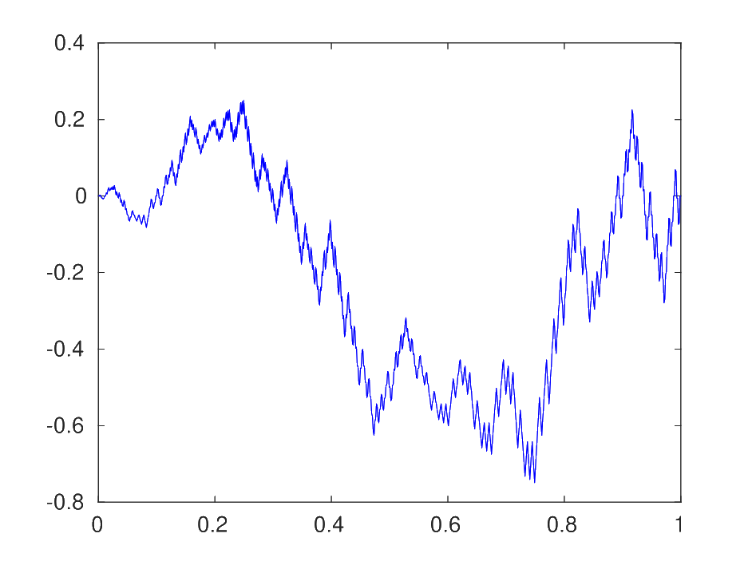
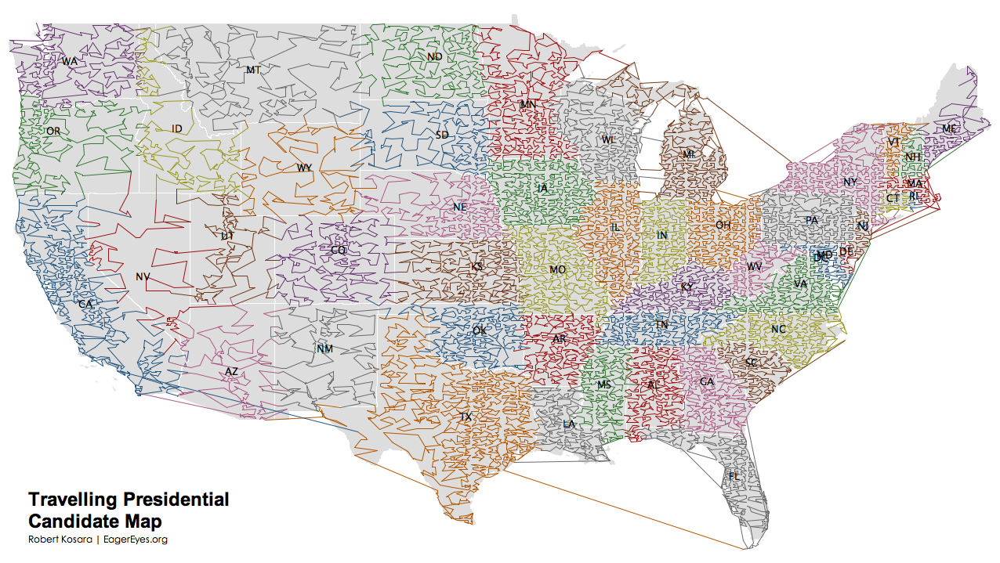

La Curva di Peano come Rough Path.
Download
Clicca per scaricare l'intera tesi in Pdf. Altrimenti leggi sotto l'abstract.
Abstract
L'obiettivo della presente tesi è stabilire se e in che modo sia possibile dare una buona definizione di integrale lungo la curva di Peano, con lo scopo finale di costruire una teoria per equazioni differenziali controllate da tale curva.
Nel Capitolo 1 viene presentata un'estensione della costruzione originale di Peano al caso d-dimensionale, insieme alle sue proprietà di continuità, surgettività, 1/d-holderianità ed uniforme distribuzione delle coordinate. Successivamente si affronta il problema dell'integrazione lungo cammini alfa-holderiani con alfa minore di 1/2, per i quali l'approccio analitico di Young e quelli probabilistici di Ito e Stratonovich risultano inapplicabili nel caso generale.
Nel Capitolo 2 vengono quindi esposti i risultati e le definizioni fondamentali della teoria dei Rough Paths di T. Lyons, soffermandosi sull'importanza del processo del secondo ordine visto come "informazione mancante" al cammino.
$$ \int_0^1{F(\gamma_s)}d\bf{\Gamma}_s=\lim_{|\mathcal{P}|\to 0}{\sum_{[s,t]\in \mathcal{P}}{F(\gamma_s)[\gamma_{s,t}]+dF(\gamma_s)[\Gamma_{s,t}]}}. $$
Tale informazione, nel caso specifico della curva di Peano bidimensionale, viene costruita esplicitamente nel Capitolo 3, dove viene introdotto il concetto di Area di Lèvy, riprendendo lo studio iniziato da S. Yam nella sua tesi di dottorato. Una volta mostrata la convergenza delle approssimanti nello spazio dei Rough Path alfa-holderiani con alfa minore di 1/2, si termina il capitolo con un confronto numerico tra integrale di Young ed integrale Rough, la cui implementazione in Matlab è riportata in appendice.
Il Capitolo 4 presenta alcune applicazioni della curva di Peano, ad esempio nel caso del Parallel Computing, della risoluzione di PDE e del TSP, insieme a dei risultati probabilistici sul Matching Bipartito. Infine viene brevemente presentata la teoria delle equazioni differenziali rough, che grazie ai risultati del Capitolo 3 sarà possibile applicare al caso della curva di Peano. Nelle conclusioni si riportano alcuni possibili sviluppi, come la definizione di integrali di 2-forme su superfici di bassa regolarità o lo studio delle proprietà geometriche delle soluzioni di RDE controllate dalla curva di Peano.
FIt is a long established fact that a reader will be distracted by the readable content of a page when looking at its layout.
LEARN ABOUT US